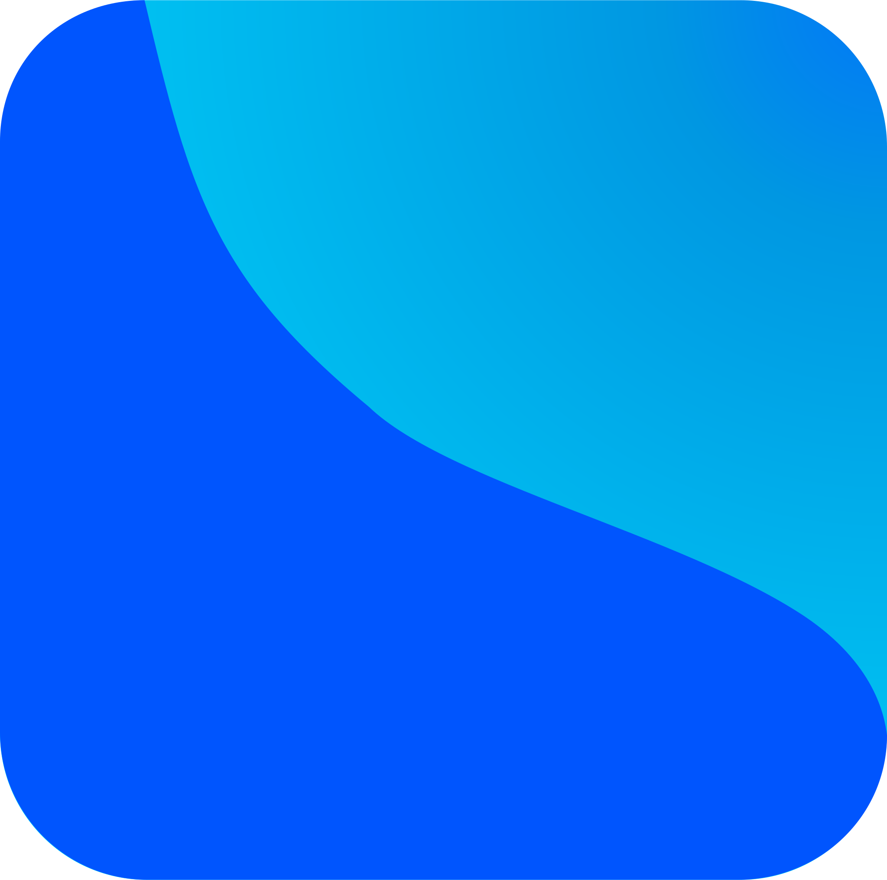

FORECAST
FOrward REsearch on Clinical And Survival Trends
For analysts building decision-analytic models, FORECAST streamlines the process of fitting, validating, and visualizing parametric time-to-event models derived from published Kaplan–Meier survival curves. Use our app to accurately estimate event hazards and monitor their evolution over time.
If you use FORECAST, please cite our publication.